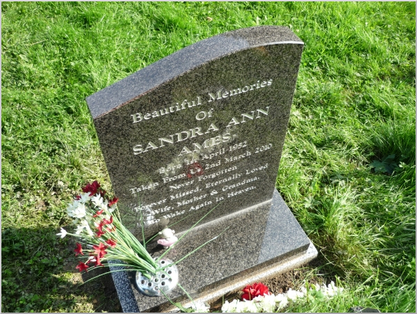

Remembering Sandra Ames
EULOGY FOR SANDRA AMES
MARCH 15th, 2010
St John the Baptist Church
Irlam, Manchester, UK
Sandra Ann Ames (nee Scheit) (Also known as Richardson)
Sandra was born in April 1952 in Waterbury, Connecticut, USA.
In her early years she lived in the city of Waterbury, then later moved out to the countryside,
to Watertown.
Sandra's father, Theodore, died in August 1963 and subsequently Sandra's mother, Ivy, took the
decision to bring the family back to her own birth place in the UK.
Sandra,
together with her mother and brother Frederick, crossed the Atlantic on the RMS Sylvania from New
York to Liverpool - arriving in the UK in November 1964.
Frederick remembers they got a train from Liverpool to Eccles, walking through a muddy churchyard
and past newly built flats to their Aunt Lily's terraced house in Lane End, Eccles.
The family were then taken to their house in Somerville Street - which has long since disappeared
under the Lankro/Akros chemical plant. Sandra and her family had to get used to coal fires for
heating and hot water; and heavy blankets on the bed, etc, a huge culture shock!
Sandra went to school at Ellesmere Park County Secondary School, and moved from Somerville Street,
to Salisbury Road, Argosy Drive and Beech Street in Peel Green (since 1971).
Sandra returned to the USA in 1969 when the family went back to Waterbury for a holiday. During
that time Sandra decided that she wanted to stay there and, when she reached the age of 18, to join
the US Forces.
Schooling was arranged for Sandra at the South School in Watertown and she was to stay with friends.
For unknown reasons, Sandra eventually decided against this and returned with the family back to
UK.
When Sandra left school she went to work at Irlam Travel (where she met her first husband, Stuart
and subsequently give birth to a son in 1978, Andrew Paul and a daughter in 1982, Laura Kay.
After the birth of her son and daughter, Sandra gave up work to become a stay-at-home mum and later,
in her spare time,she would help out in their school in the classroom as a parent helper and on
school day trips. This eventually led to a career as a support worker and care assistant caring for
various children with physical disabilities and behavioural problems. Sandra worked at many schools
in the area including Cadishead Infants School and St Mary's CE Primary School in Cadishead, St
Gilberts Primary School in Winton and St Andrews Primary School in Eccles and enjoyed her job
tremendously, talked about it until it drove everyone daft and found it very rewarding but also
upsetting after a little boy she cared for died.
Soon after, Sandra returned to work in travel, working, once again, at Irlam Travel and later Co-op
Travel in Salford until being the victim of a traumatic armed robbery whilst at work and then a few
months later, tripping and breaking her leg very badly.
However whilst receiving treatment for her leg injury, Sandra met Derek Ames, who was to become her
husband, marrying a few years later at Gretna Green. Sandra and Derek lived in Irlam, St Helens and
then later moved to Mansfield.
Sandra didn't have many specific hobbies to speak of but she had many many interests, she used to
love singing aloud whilst listening, on her walkman, to Piccadilly 1152 radio station and she loved
riding her 'Shopper' bike around until one day when she was distracted, waved to someone and rode
straight into a hole in the road, to the surprise of some workmen!!
She also used to love and was
really quite good at
drawing, she used to draw pictures of cartoon characters, some of which were displayed on the walls
of Pendlebury Children's Hospital from when her daughter, Kay, was a patient there.
Sandra loved to
cook and made a fabulous Sunday brunch and Sunday dinner covered in her special gravy which she
always said she had a secret recipe for.
Sandra loved to do Crossword puzzles and liked to enter the Take a Break magazine competitions which
paid off recently when she recently won, not once but twice.
Sandra used to love shopping and
window shopping and she used to take her daughter Kay shopping every weekend without fail. She had a
lot of friends locally and would take ages to get through Kwiksave or Tesco as she knew or spoke to
absolutely everyone!
Sandra enjoyed many holidays, from early family holidays to Filey and Paignton, to visiting her late
father's family in Dresden, Germany and returning a few times to her birth place in the US and later
holidaying with her husband Derek in their motor home and caravan visiting many places in the UK.
Sandra became a grandma on March 2nd 2009 and absolutely adored her grandaughter, Emilia Rose. All
throughout her illness she talked and asked about Emilia and when Emilia came to visit Sandra at the
hospice, after days of being asleep and the doctor's Sandra only had a short time left with us,
Sandra woke up and sat up to see Emilia to everyone's amazement. When Sandra finally passed away,
weeks later, it was on Emilia's 1st Birthday and we like to think she was hanging on to go on
a very special day when everyone would have no choice but to be happy and now she is finally at
peace.
Sandra's husband Derek Ames wishes to thank all the district nurses at Shirebrook Health Centre and
all the doctors, nurses and staff at John Eastwood Hospice for the way they took great care and the
love they gave to Sandra throughout her illness and also both families for how they have given him
strength in this sad time.

|
|
©
· Fred Scheit
|